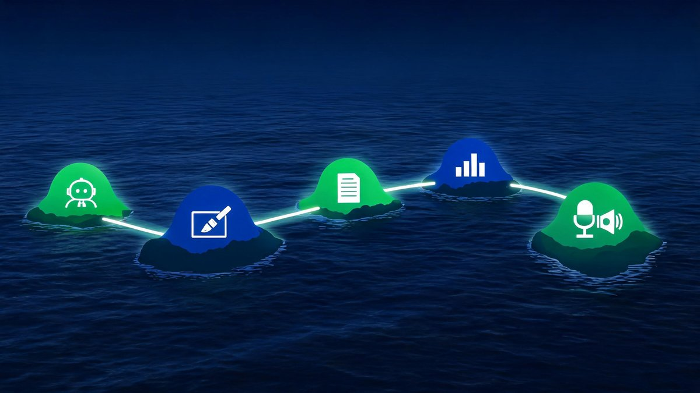

AI Tools for Small Business: The One-Week Starter Plan
Every small business owner hears the same advice in 2026: "use AI or fall behind." Nobody mentions the part where 10,000 tools, 50 listicles, and zero instructions leave you exactly where you started — busy, skeptical, and still doing everything by hand.
Quick answer: Start with ChatGPT (writing), Canva AI (marketing), QuickBooks (books), and Zapier (automation). Add one tool per week, keep a human review loop, and expect 5-7 hours back per week.
Table of Contents
The Overwhelm Is Real — and Expensive
"Anyone else feel totally lost trying to start with AI?" — that is a real post title from a small business owner on Reddit, and the replies read like a support group. Sound familiar? The owner of a dental practice on r/Entrepreneur described the same spiral: marketing, admin, patient follow-ups — wearing every hat, watching AI tool lists grow faster than the day. Here is the uncomfortable part: the overwhelm is not a personal failing. It is the market's design — thousands of tools, each sold as essential.

Meanwhile the adoption wave keeps growing without waiting:
77% of US small businesses now use AI regularly — the majority has already moved. The gap is not between believers and skeptics anymore. The gap is between owners with a system and owners still scrolling tool lists at midnight.
First, the Math: What AI Gives Back
How much time can AI actually save a small business?
How much time can AI actually save a small business? The average small business worker saves 5.6 hours per week with AI tools, according to 2026 Business.com research (Business.com). Owners save more: 6.8 hours per week on administrative tasks alone (JPMorgan Chase Institute). Additionally, 58% of small business AI users report saving more than 20 hours per month (CapsuleCRM). Put the numbers together and the math is blunt: a solo owner recovering 6.8 hours weekly gains roughly 350 hours per year. For example, at a conservative $30 per hour value, that is over $10,000 of annual capacity reclaimed. We found the real cost of quality tools runs $8 to $10 per hour saved, according to 2026 pricing analysis (DigitalApplied). First, the hours are real. Second, the tools are cheap relative to the payoff. Finally, the gap between adopters and non-adopters widens every quarter.
The Only 4 Tools to Start With
Four categories cover the small business workload — skip the 50-tool listicles. One tool per category is enough to start:
| Tool | Job It Does | Start Cost | Verdict |
|---|---|---|---|
| ChatGPT (or Claude) | Writing, summaries, customer replies, brainstorming | Free → $20/mo | ✓ Start here |
| Canva AI | Social graphics, ads, product visuals — no designer needed | Free → $15/mo | ✓ Week 2 |
| QuickBooks + Intuit AI | Bookkeeping automation, categorization, cash-flow views | ~$19/mo | ✓ Week 3 |
| Zapier | Connects everything — form → email → sheet → CRM on autopilot | Free → $20/mo | ⚠ Week 4 — powerful, but a setup trap for beginners |
| "All-in-one AI OS" bundles | Promise everything, deliver onboarding calls and upsells | $$$/mo | ✗ Skip until month 3+ |
- ChatGPT first — because writing is 80% of admin, and the free tier teaches the skill → prompt → review loop that every other tool assumes.
- Canva second — the marketing hat gets lighter the same day → posts, flyers, product shots in minutes.
- QuickBooks third — the books stop piling up → Intuit's 2026 report is literally about this shift.
- Zapier last — glue is powerful → but glue without clean workflows just automates chaos.
Automate by business type, in this order: Retail → product descriptions, review responses, inventory summaries. Services → quotes, follow-up emails, scheduling confirmations. Professional → proposals, meeting notes, research summaries. The first automated task should be the task done most often, not the task that looks coolest.
Which AI tool should a small business start with?
Which AI tool should a small business start with? The best first AI tool for a small business is ChatGPT, because the $0 free tier covers writing, summarizing, and customer-drafting on day one. Canva AI comes second for marketing visuals without a designer, at $15 per month for the Pro tier. QuickBooks with Intuit Intelligence is third for bookkeeping automation, from $19 per month (Intuit). Zapier is fourth, connecting the rest. According to the 2026 Intuit QuickBooks AI Impact Report, 77% of US small businesses now use AI regularly, up from 48% 18 months earlier (Intuit). We found the sequence matters more than the selection: start with one tool, run a full week, then add the next. For example, a dental practice owner on r/Entrepreneur described drowning in marketing, admin, and patient follow-ups until the stack was cut to essentials. First writing, then visuals, then books, then glue — four tools, under $55 monthly.
Your First Week: The 7-Day Plan
Seven days, one hour a day, zero overwhelm. The plan assumes nothing:
| Day | Move (60 min) | Output |
|---|---|---|
| Day 1 → | Create ChatGPT account → write 3 real emails you sent this week, ask for improvements | Feel the speed gap |
| Day 2 → | Build a prompt library file → save every prompt that works (reply template, product description, follow-up) | Your personal playbook starts |
| Day 3 → | Draft one social post + one flyer in Canva AI → publish both | Marketing hat, lighter |
| Day 4 → | Turn on QuickBooks AI categorization → review 20 auto-sorted transactions | Books current |
| Day 5 → | Automate ONE repetitive task in Zapier → form response → thank-you email | First autopilot workflow |
| Day 6 → | Human review pass → check every AI output shipped this week, note errors | Oversight loop installed |
| Day 7 → | Measure → hours saved this week × your hourly value → decide tool #2 (or none) | The decision, with numbers |
Miss a day? Skip it — the order matters more than the streak. Day 6 (the review pass) is the one day never to skip, because the review habit is what separates owners who save 6.8 hours weekly from owners who quietly cancel in month two. Bookmark the table, set a daily 60-minute calendar block, and treat the week as a pilot with a scoreboard, not a personality test.
3 Mistakes That Burn the First 90 Days
Read this section twice — these three patterns kill more AI pilots than any bad tool. Each one has a fix that fits on a sticky note:
Regulation and Human Oversight for Small Teams
Boring heading, important topic. Regulators are not waiting for small businesses to catch up — the EU AI Act made incident logging and human review baseline expectations, and the direction of travel is one-way. The good news: the small-business version of compliance fits on an index card.
Why do regulation and human oversight matter for a small team using AI?
Why do regulation and human oversight matter for a small team using AI? Regulation and human oversight matter because AI mistakes at a small business hit customers directly — a wrong invoice, a fabricated claim in marketing copy, a privacy slip. According to the 2026 EU AI Act framework, incident logging and human review are becoming baseline expectations for AI use (European Union). Small teams get oversight right with three habits. First, a human approves anything customer-facing before it ships. Second, sensitive data stays out of consumer chatbots — names, payment details, health information. Finally, one person owns the AI stack and reviews outputs weekly. We found the oversight burden is smaller than the fear: roughly 30 minutes per week at the start. For example, the same review loop that catches a fabricated statistic also catches a tone-deaf email. Use AI for speed; keep judgment in human hands.
For the bigger picture on how oversight fits the 2026 landscape, see our three pillars of 2026 finance, the UK regulators' AI approach, and our explainer on OpenAI's misalignment incidents — the disclosure that made oversight front-page news. And when the books themselves are the bottleneck, the SMB cash-flow survival guide pairs with this plan.
Practical privacy in one line: if a leak would embarrass the business, it does not go in the chatbot. Anonymize first, verify the vendor tier second, review the output third. The habit takes less time than the cleanup after a breach.
Solo or 1-4 Employees? Read This Twice
Is AI worth it for a business with 1 to 4 employees?
Are AI tools worth using for a business with 1 to 4 employees? Yes — and the data shows the opposite of the common assumption. Micro-businesses (1 to 4 employees) sit at just 23% AI adoption, while larger small businesses reach 67% (BizStack, 2026). The 44-point gap persists despite micro-businesses gaining the most per hour saved, because owners wear every hat there. According to Intuit's report, 28% of small businesses now use AI daily (Intuit). The math favors the smallest teams: one recovered hour is 12.5% of an eight-hour day. For example, automating invoice reminders alone returns several hours monthly at nearly zero cost. We found the honest caveat: solo operators face the steepest learning curve, so the one-tool-per-week rule matters most at the smallest size. First automate the repeatable. Second automate the written. Finally, automate the glue between tools.
FAQs
Which AI tool should a small business start with?
Start with ChatGPT — the free tier covers writing, summarizing, and customer-drafting on day one. Add Canva AI for visuals in week two, QuickBooks for bookkeeping in week three, and Zapier for automation in week four. The sequence matters more than the selection: one tool per week, with a review loop.
How much time can AI actually save a small business?
The average small business worker saves 5.6 hours per week, and owners save about 6.8 hours weekly on administrative tasks (Business.com 2026; JPMorgan Chase Institute). Additionally, 58% of AI-using small businesses report saving more than 20 hours per month.
How much should a small business spend on AI tools?
Most starter stacks run $20 to $55 per month across free tiers and one or two paid plans. At 5-7 hours saved weekly, that works out to roughly $8-$10 per hour saved — a fraction of the hourly value the time recovers.
Do small business owners need technical skills to use AI?
No. The starter tools are conversational — typing a clear request is the main skill. The habit that matters is review: read outputs before shipping, correct tone and facts, and save the prompts that worked into a personal playbook.
What about customer data privacy when using AI tools?
Keep names, payment details, and health information out of consumer chatbots — anonymize before pasting anything sensitive. For business use, prefer enterprise or business tiers with data controls, and check whether the vendor operates a documented data-handling and incident-tracking process.
Is AI worth it for a business with 1 to 4 employees?
Yes — micro-businesses gain the most per hour saved because owners wear every hat, yet only 23% use AI today versus 67% of larger small businesses. Start with one tool automating the most repeatable task, measure hours saved after week one, and scale from there.
The Bottom Line
The 2026 question is no longer whether small businesses use AI — 77% already do. The question is whether the hours come back or disappear into another abandoned subscription. Pick the four tools, run the seven-day plan, keep the human review loop, and measure in hours — the only metric that pays rent. Start Monday. One tool. One week. Then decide.
Methodology note: adoption and time-savings figures come from the 2026 Intuit QuickBooks AI Impact Report, Business.com 2026 research, JPMorgan Chase Institute, and CapsuleCRM surveys, as cited in the body. Cost-per-hour figures are computed from listed starter pricing at the time of writing.